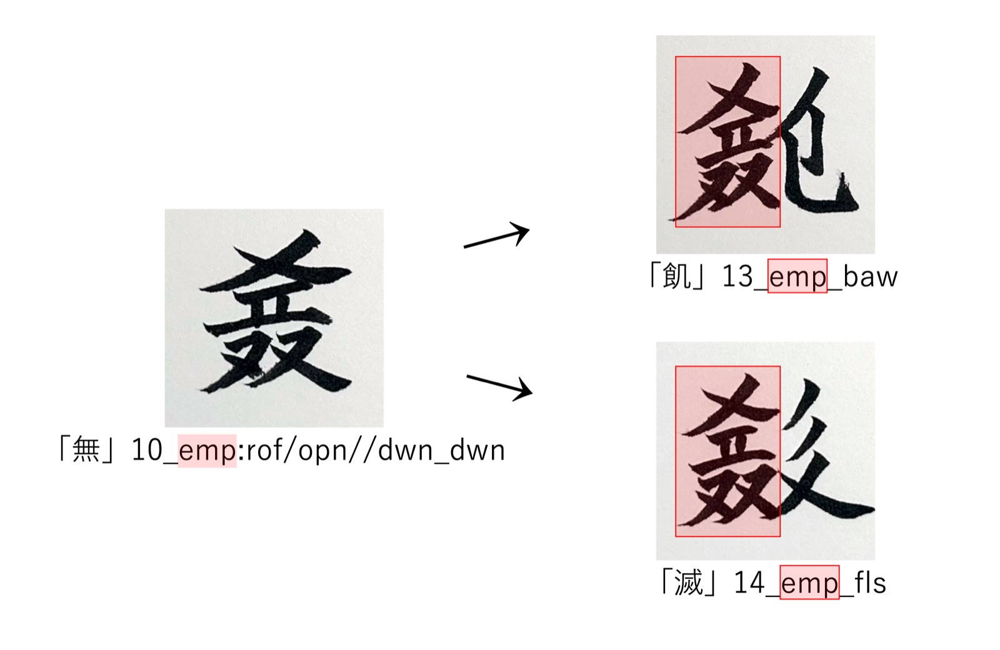
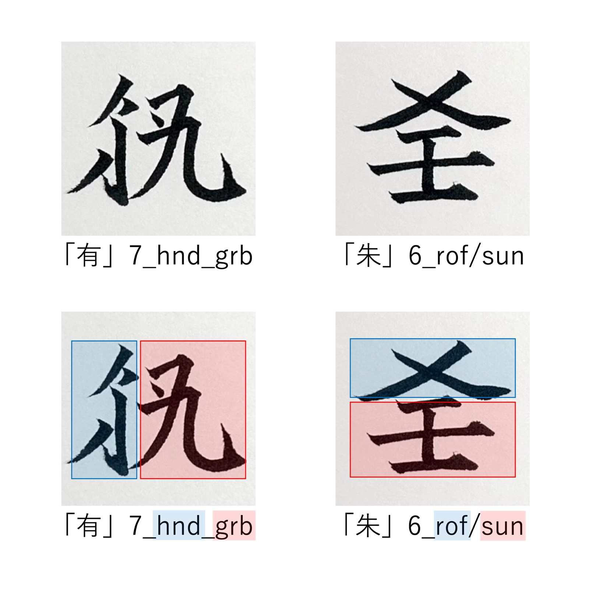
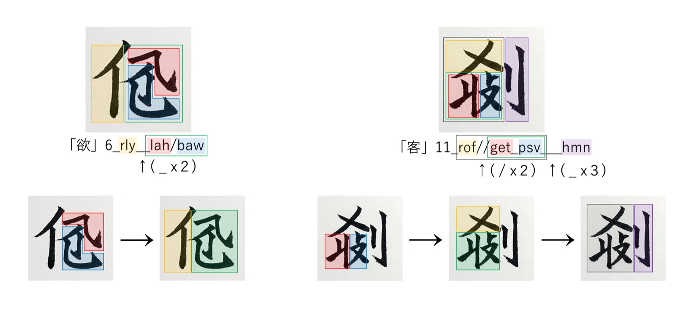
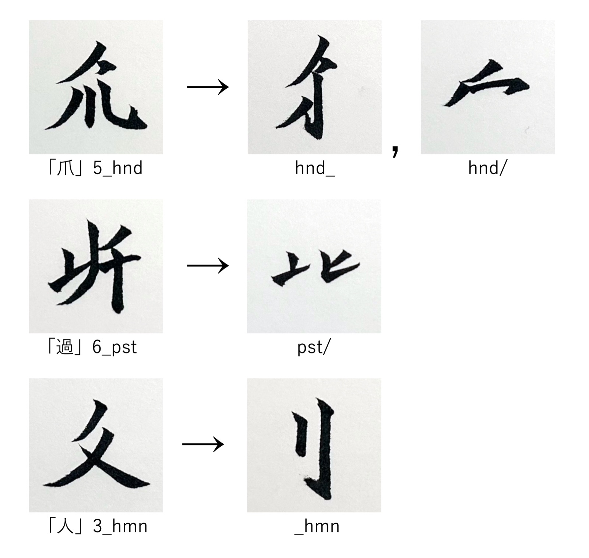

留為語には発音がありません。すべての語は、留為文字という表意文字だけで書き表されます。
留為文字は漢字のようにいくつかの部品を組み合わせて作られています。このページでは、留為文字がどのような部品からできているのか、そしてその組み立てを書き表す RSDcode の読み方を説明します。ZpDIC留為辞典を読むときの手引きとしても使えます。
1. 辞書の見出しの漢字について
ZpDIC留為辞典の見出しには、留為文字とあわせて普通の漢字も表示されています。これは対応漢字といって、留為文字の一つ一つに漢字を割り当てたものです。留為文字は専用のフォントがなければ表示できず、キーボードから直接打ち込むこともできません。そこで、どの環境でも読めて、打ち込んだり検索したりできるように、対応漢字で書き写しています。
対応漢字は、あくまで書き写すための目印です。なるべく意味が近い漢字を使用するように努めていますが、対応漢字の意味が、その留為文字の意味を表しているとは限りません。字の意味は、辞書の訳語と、次に説明する部品の組み立てから読み取ってください。
2. 留為文字の種類
留為文字はその構造から4種類に分類されます。
単字
それ一つだけで文字として成り立つ、もっとも基本的な単位です。
合字
いくつかの部品を組み合わせてできた文字です。留為文字の大部分は合字です。
捕（捕まえる）は、「手の平」と「つかむ」を左右に並べた字です。
滿（満月）は、「太っている」と「月」を上下に重ねた字です。
結字
合字と同じく部品を組み合わせてできていますが、その組み合わせがまとまりのまま、ほかの多くの字の中にくり返し現れるものです。何度も使われるうちに、単字と同じように一つの部品として働くようになっています。
たとえば無（空っぽ）は、いくつかの部品からできた字ですが、このまとまりがそのまま飢（飢える）や滅（滅びる）の中に使われています。

零字
それ一つだけでは文字として成り立たず、ほかの部品と組み合わさったときにだけ現れる部品です。
たとえば朱の上の部分は「屋根」を表す零字で、その下に単字の「太陽」が置かれています。
零字はZpDIC留為辞典には載っていません。辞書は単語を載せる場所ですが、零字は単語にはならず、単語として使われるのは単字・合字・結字だけだからです。
3. 文字を並べた語：熟語とイディオム
留為語の単語には、文字を2つ以上並べてできたものもあります。
熟語
2つ以上の文字がまとまって、全体で一つの名詞や一つの動詞のように働くものです。
イディオム
2つ以上の文字がよく一緒に使われる決まった言い回しですが、それぞれの字が自分の働きを保ったままになっているものです。
「耐えられない」
不可保では、不は否定、可は「〜できる」、保は「保つ」として、それぞれ別々に働いています。3つがまとまって一つの動詞になっているわけではありません。
ただし、熟語とイディオムの境目は、今のところはっきりしていません。留為語は語の形が変化しないので、「ここまでが一つの語」「これは動詞」ということを、形から決める手がかりがないためです。そのため、どちらとも決めにくいものや、一つの品詞にまとめにくい並びを、イディオムとして載せている場合もあります。辞書の「熟語」「イディオム」のタグは、あくまで目安と考えてください。
ZpDIC留為辞典では、見出しの上に「単字」「合字」「結字」「熟語」「イディオム」のどれにあたるかがタグで示されています。
4. RSDcodeの読み方
RSDcode（Ruwish Structural Description code：留為語構造記述コード）は、留為文字の組み立てを英数字と記号（ASCII）だけで書き表したものです。ZpDIC留為辞典では、それぞれの語にRSDcodeが載っています。字の形が表示できなくても、RSDcodeを読めば、その字がどの部品をどう組み合わせてできているかが分かります。
基本の形
RSDcodeは、次のような形をしています。
- 最初の数字は画数です
- 英字3文字が一つの部品を表します。英字は英単語から作られています（
plm= palm、grb= grab、mon= moon など） - 部品と部品の間の記号が、組み合わせ方を表します
| 記号 | 意味 |
|---|---|
_ | 左右に並べる（漢字の「明」のような形） |
/ | 上下に重ねる（漢字の「字」のような形） |
たとえば合字の例に出した捕は 7_plm_grb で、「手の平」（plm）と「つかむ」（grb）を左右に並べた字、滿は 8_fat/mon で、「太っている」（fat）と「月」（mon）を上下に重ねた字です。
下の図は、有（持つ）7_hnd_grb と朱（朱色）6_rof/sun の字形とRSDcodeを、部品ごとに色分けしたものです。

記号を重ねる
部品が3つ以上ある字では、記号を2つ、3つと重ねて書きます。記号の少ないところから先にくっつけていくと、字の形が決まります。
欲（〜したい） 6_rly__lah/baw の場合：
lah / baw記号1つ：lahとbawを上下に重ねるrly __ (1)記号2つ：rlyと 1 のまとまりを左右に並べる
客（客） 11_rof//get_psv___hmn の場合：
get _ psv記号1つ：左右に並べるrof // (1)記号2つ：rofの下に 1 を置く(2) ___ hmn記号3つ：2 とhmnを左右に並べる

部品は形を変える
同じ部品でも、一つだけで書くときと、ほかの部品と組み合わさったときとで、形が変わることがあります。漢字の「手」が「扌」になるのと同じです。
形が変わると、画数も変わることがあります。どう変わるかは、部品がどの位置に、どう組み合わさるかによって決まります。そのため、合字の画数は、部品の画数を足した数と一致しないことがあります。
| 字 | RSDcode | 部品の画数の合計 | 実際の画数 |
|---|---|---|---|
| 捕 | 7_plm_grb | 4＋3＝7 | 7 |
| 有 | 7_hnd_grb | 5＋3＝8 | 7 |
どちらも右側は同じ grb ですが、有では左側に置かれた hnd の形が変わり、1画少なくなっています。
ただし、形や画数が変わっても部品の意味は変わりません。RSDcodeは形ではなく部品を書いているので、コードを見れば、形が変わった部品も同じ部品だと分かります。
下の図は、部品が一つだけのときと、組み合わさったときの形を並べたものです。hnd は、左側に置かれたとき（hnd_）と上に置かれたとき（hnd/）とで、それぞれ別の形になります。

結字の書き方 :
結字は、コロン : を使って書きます。コロンの前が結字の名前、後ろがその中身の組み立てです。
一度名前が付いた結字は、ほかの字の中では名前だけで書けます。飢は 13_emp_baw、滅は 14_emp_fls です。どちらも無のまとまり（emp）を左側に持つ字だと分かります。
まだ名前のない部品 ~
RSDcodeの中には、~ が入っているものがあります。これは、まだ英字3文字の名前が付けられていない部品に、仮に置いている印です。
例：橋 12_hnd__~/grs
熟語とイディオムのRSDcode
熟語とイディオムでは、それぞれの文字のRSDcodeを、文字の並び順にカンマ , でつないで書きます。
例：檎果 12_frt_red,6_frt
5. 辞書で部品から字を探す
RSDcodeを使うと、ZpDIC留為辞典で部品から字を探すことができます（漢字の部首検索のようなものです）。
- 検索の対象を「全文」にする
- 一致の方法を「部分」にする
- 検索窓に部品の英字を入れる。たとえば
flsと入れると、flsの部品を持つ字が一覧で出てきます
fls_ のように記号まで含めて入れると、fls を左側に持つ字にしぼり込めます。